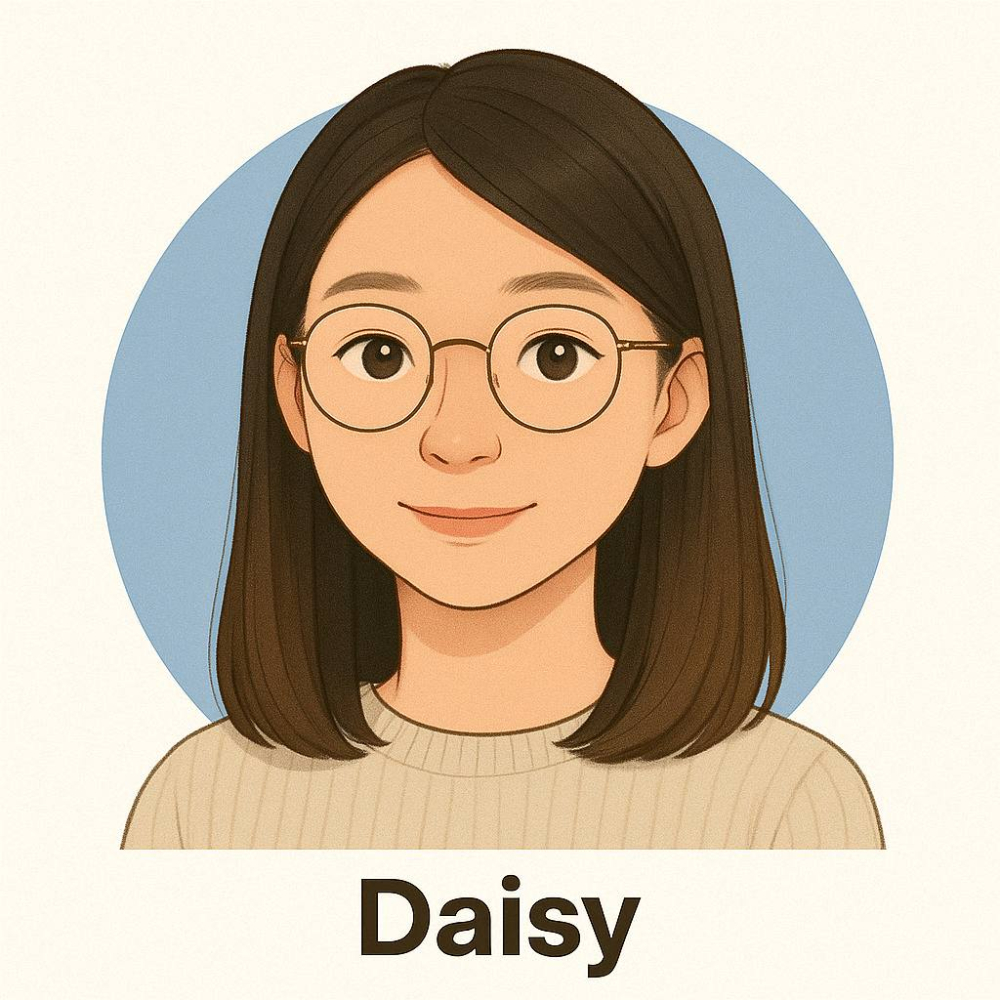
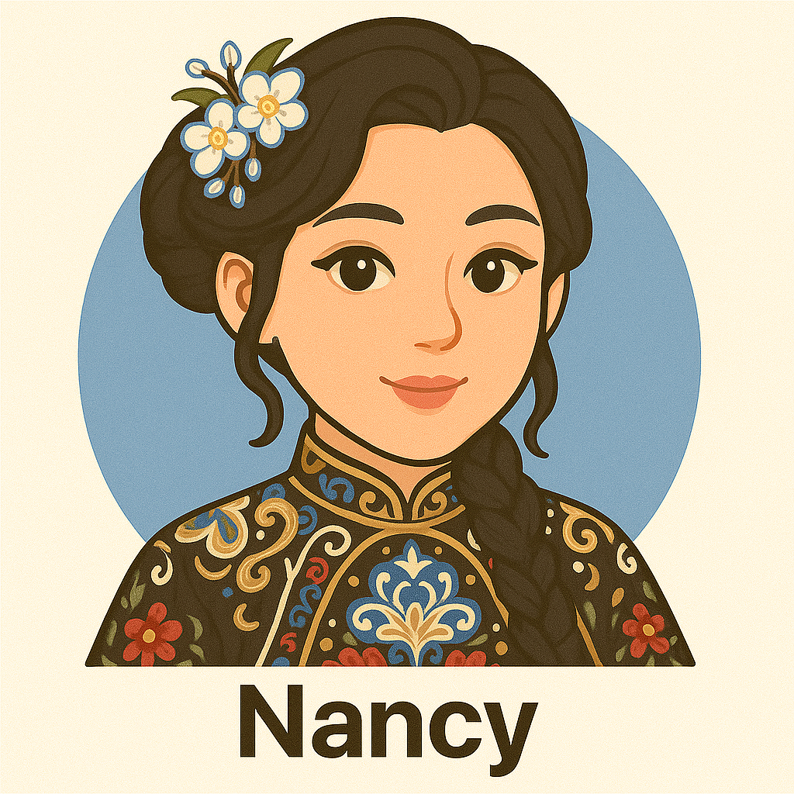

Nicole Wan
Law, University of Bristol
- Specialises in English, TOK, Extended Essay, and Uni Applications
- Bilingual (English/Chinese) – makes complex concepts simple
- Mentored student into Cambridge Law | Strong academic writing support

Jayden Park
AI, Yonsei University
- IB/A-Level/AP expert in Math, Physics, Chem, and CS
- Super responsive – answers all questions and researches tough ones
- AMC12 1st Place | AP CS A: 5/5 | 3+ years tutoring experience
Scarlett Wu
MBA, University of Texas
- Fortune 500 Executive & Silicon Valley Tech Leader
- 20+ years leading engineering teams
- Expert interviewer who has hired 500+ graduates

Daisy Chung
IT, Moansh University
- Makes IT & Math easy with real-world analogies
- Patient and empathetic – great with beginners and practical learners
- Builds strong student trust and learning confidence

Sophie Beerens
Fine Arts, KABK The Hague
- History specialist (French, Russian, American Revolutions + Ancient World)
- Adapts to all ages and learning styles – engaging and clear
- Highly rated for her interactive, question-led approach
Hannah Harms
Archaeology, University of Melbourne
- History specialist (French, Russian, American Revolutions + Ancient World)
- Adapts to all ages and learning styles – engaging and clear
- Highly rated for her interactive, question-led approach
Philip Wong
Econ, Moansh University
- Teaches IB, A-Level, VCE, HKDSE Economics, Accounting, and Japanese
- JLPT N1 certified – also supports Japanese studies
- Experienced with global students | Adapts teaching to fit your pace
“Data‑driven, engaging, and bilingual.”
Rayna Chan
Actuarial, Moansh University
- Maths, Econ, and Finance made clear with real-world applications
- Strong in data analysis, exam prep, and breaking down tough topics
- Treasurer experience = real leadership + money management skills

Leonore Li
Biomedical Science, KCL
- HL Bio specialist – helped student go from 3 → 6 in 2 weeks
- Flexible, calm teaching style with strong parent communication
- Medaled in British Bio & Chem Olympiads
Jasmine Harris
English Lit, University of Warwick
- Teaches students aged 3–adult across Asia & remotely
- Fun, discussion-based English classes with flexible goals
- Background in editing, creative writing, and cultural storytelling

Alexa Meng
Doctor of Music Arts, Illinois University
- Associate Professor at a renowned music conservatory
- Expert in guiding students to gain admission to top-tier global music schools

Valerie Zhou
Business Management, Essex University
- Senior college advisor for top-tier international schools. IELTS perfect score mentor.
- Counselor accredited by Bitish Council and American School Counselor Associations
- 15 years of experience working in leading international schools in China

Nancy Wu
Mechanical Engineering, University of Melborune
- Co-founder of Zeta Technology, focused on delivering AI and Web3-powered education for future-ready students
- Former engineer on ACRUX, Australia’s first student-built satellite project
- Experienced in hands-on, project-based STEM education & College Guidance to Singaporean and Australian Universities